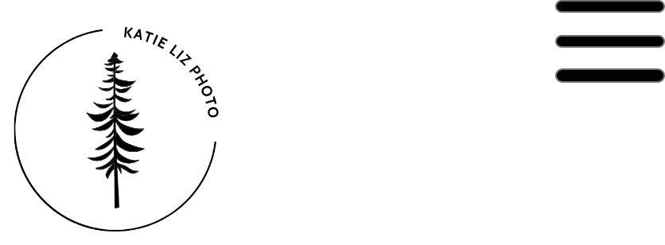
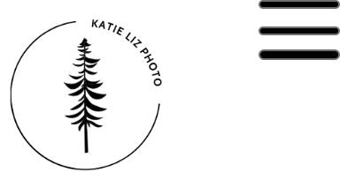

Navigation
This is a fixed component that runs along the top of the page. It allows users to navigate to any section of the site.
Web layout

Tablet layout

Mobile layout
Accessibility
When using a <nav> element, be sure to provide descriptive labels for navigation links. In addition, include ARIA roles such as aria-current-"page" to help assistive technologies identify menu buttons and active pages.
Details
When visiting the menu in the navigation area, the user is able to explore different pages. These pages include "Home," "Portfolio," "Experience," "About," and "Connect." The navigation menu is responsive and reformats depending on the webpage sizes. It is suitable for desktops, tablets, and mobile devices.
Code
<nav class="navbar navbar-expand-lg navbar-light bg-light">
<div class="container-fluid">
<a class="navbar-brand" href="#">Navbar</a>
<button class="navbar-toggler" type="button" data-bs-toggle="collapse" data-bs-target="#navbarNav" aria-controls="navbarNav" aria-expanded="false" aria-label="Toggle navigation">
<span class="navbar-toggler-icon"></span>
</button>
<div class="collapse navbar-collapse" id="navbarNav">
<ul class="navbar-nav">
<li class="nav-item">
<a class="nav-link active" aria-current="Home" href="#">Home</a>
</li>
<li class="nav-item">
<a class="nav-link" href="#">Portfolio</a>
</li>
<li class="nav-item">
<a class="nav-link" href="#">Experience</a>
</li>
<li class="nav-item">
<a class="nav-link" href="#">About</a>
</li>
<li class="nav-item">
<a class="nav-link" href="#">Connect</a>
</li>
</ul>
</div>
</div>
</nav>